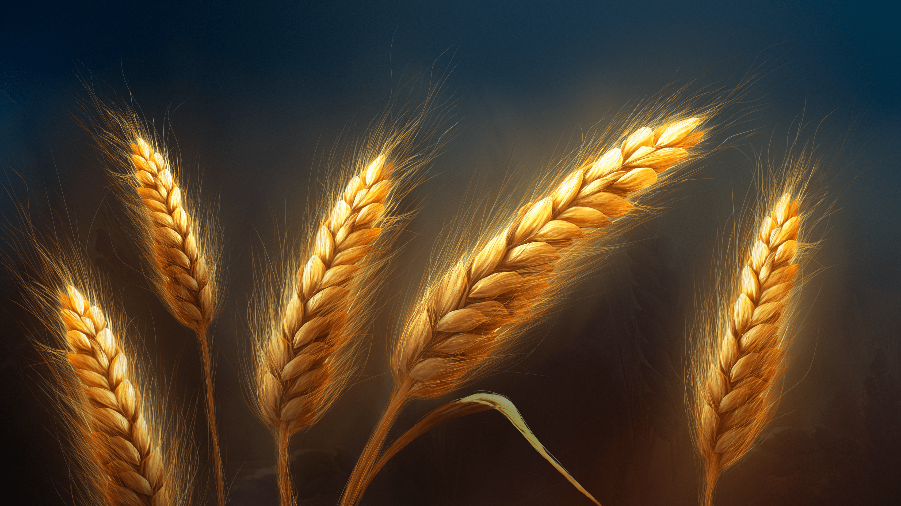
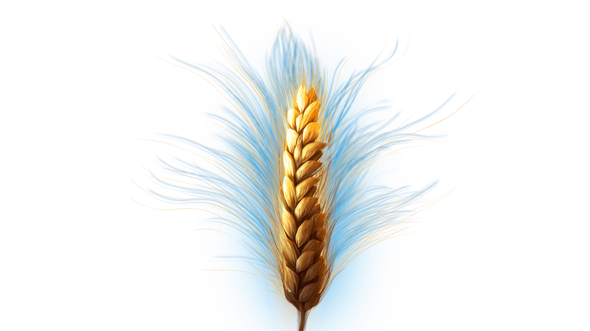

Смотреть
лица и истории
АПК

На главную
Минимальная длина - 2 символа
Результаты поиска
Исполнительный директор
Дмитрий Викторович Свирин
7 л. 9 м.
- трудится в компании
Дмитрий увлекается садоводством, это его любимое хобби, которое приносит не только удовольствие, но и пользу. Он считает, что садоводство является одним из самых полезных и интересных занятий для человека.
Предыдущий
Следующий
Закрыть